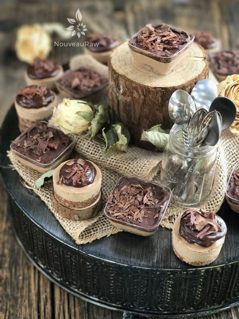

Sugar Free Mocha Caramel Party Cheesecakes

~ raw, vegan, gluten-free, no added sugar ~
“Do you like to throw parties but find that you are fretting far too much to enjoy the party yourself? “
There’s more to being a gracious host than just providing abundant food, topping off drinks, and entertaining at the same time. It’s equally as important that YOU be a guest at your own party. If you’re relaxed and enjoying yourself, your guests will follow suit.
So in order to be a guest at your own party, preparation is key. I am not saying that to have a good time, you need to follow what I do. Heck no, I am just sharing with you a bit of what my routine is.
It all starts with a computer program called Evernote. It’s a free program that you can use on your computer and other mobile devices. I create a virtual notebook of every detail that I want to execute for the party.
It took a bit to get used to it. Not because it’s difficult to navigate but because I guess I am a tad old school. I like writing with ink. But over time I have come to appreciate all that I can do with this program. I won’t go into detail about it, you can click on the link above and read about it, and if you have any questions, I am happy to answer them in the comment section.
With my lists in hand, I know what needs to be done and when. I plan my time efficiently so that I may conduct the party with grace and ease…. grace and ease… that is my party motto.
I will be sharing more of my party planning tips with other recipes too. I don’t want to bog you down with my chitter-chatter when really what you want to do is dive headfirst into that cheesecake. :) Speaking of which, this cheesecake recipe has already been on my site for quite some time. But I am sharing it with you again since I had a lot of fun creating sample-sized cheesecakes for our party guests. Everything that I share with you is to inspire, or perhaps help you think outside of the 9″ Springform pan. :)
These little desserts were cooed over because they were so dainty and delicious. Typically, I serve raw desserts in single servings, but now I reduce it even further to sample sizes, this allows the guest to indulge in many other treats and flavors. Enjoy my friends. Blessings, amie sue P.S. This dessert will not be sugar-free if you add the ganache. Just the cheesecake itself is sugar-free.
 Ingredients:
Ingredients:
yields 20 (2-3 Tbsp) party cheesecakes
Crust:
- 1 cup (135 g) raw almonds, soaked & dehydrated
- 1 cup (88 g) dried shredded coconut
- 2 Tbsp (13 g) raw cacao powder
- 1/4 tsp (2 g) Himalayan pink salt
- 2 Tbsp (28 g) Markus Sweet or Xylitol, powdered
- 1/4 cup (68 g) water
- 2 tsp (6 g) vanilla extract
Filling:
- 2 cups (281 g) raw cashews, soaked & dehydrated
- 1.6 cups (385g ) heavy coconut cream (fresh or canned)
- 2 Tbsp (13 g) raw cacao powder
- 2 Tbsp (8 g) organic instant coffee
- 1/4 cup (48 g) Markus Sweet or Xylitol, powdered
- 1 Tbsp (14 g) fresh Meyer lemon juice
- 1/2 tsp (4 g) liquid NuNaturals stevia
- 1 tsp (3 g) vanilla extract
- 1/4 tsp (2 g ) Himalayan pink salt
- 1/2 cup (102 g) melted coconut oil
Topping (optional):
Preparation:
Crust:
- In the food processor, fitted with the “S” blade, pulse the almonds into small pieces, then add the coconut, cacao, and salt
- Be careful that you don’t over-process the nuts and head towards making a nut butter. Nothing wrong with that… just not our goal at the moment.
- This ensures that the dry ingredients (spices) get well distributed so you don’t end up with concentrated pockets of flavors.
- Add the sweetener and vanilla, pulsing it together. Test the batter by pinching it between your fingers. If it holds, it is ready.
- Line the party cups and/or a muffin pan with removable bottoms on a baking pan with edges.
- The pan will help with transporting the desserts to the fridge or freezer.
- You can make these larger or even smaller… you have total control over creating the size you want.
- Create small balls of crust batter and place them in the bottom of each cup/cavity.
- Once done, use another cup to press the ball into a crust shape. Don’t press too hard, we don’t want it compacted in there.
- Dip the bottom of the cup in water after you press every other crust. This will prevent the crust from sticking to the bottom of the cup that you are using to shape the crusts. I hope that made sense. :)
- Set aside while you make the cheesecake batter.

Filling:
- Add to a high-speed blender; cashews, coconut cream, cacao, instant coffee, sweetener, lemon, stevia, vanilla, and salt. Blend until creamy.
- This can take 3-5 minutes depending on your machine. Step occasionally to test for grittiness. Feel grit? Keep blending.
- While the blender is running and a vortex is formed, drizzle in the coconut oil. Resume blending until all is well incorporated.
- Pour 2-3 Tbsp of the filling into each party cup.
- Lightly tap the pan on the countertop to help work out any air bubbles that may be trapped in the batter.
- Place in the freezer for 4-6 hours or until firm.
- Another option is to allow the cake to firm up in the refrigerator for at least 8 hours, preferably 24 hours.
- Remove and place a dollop of ganache on top. You can also add chocolate shavings for decor but that is optional. Be creative!
- Storage – Keep the cake in the fridge or freezer when you are not eating it.
- It will keep for 3-5 days in the fridge or 1-2 months in the freezer.
- Be sure to seal it well so it doesn’t absorb fridge odors.
- If you freeze these, defrost them by placing them in the refrigerator for at least 24 hours before serving.
© AmieSue.com